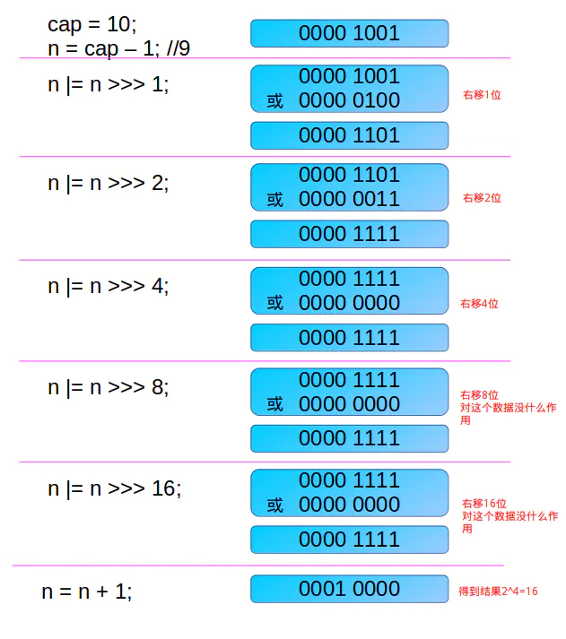
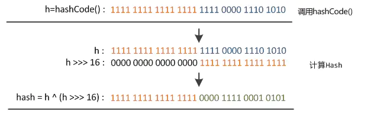
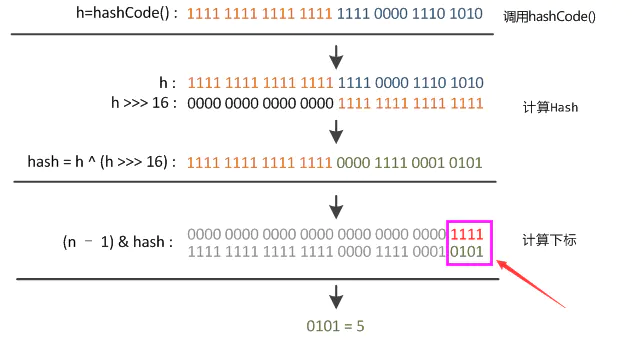

简介
- Java集合类是Java将一些基本的和使用频率极高的基础类进行封装和增强后再以一个类的形式提供。集合类是可以往里面保存多个对象的类，存放的是对象，不同的集合类有不同的功能和特点，适合不同的场合，用以解决一些实际问题。
- Java中的集合类可以分为两大类：一类是实现Collection接口；另一类是实现Map接口
- Collection中的集合称为单列集合(单身狗)，Map中的集合称为双列集合（情侣）。
- 分析环境：JDK1.8
区别
- 集合与数组的区别
数组不仅可以存放基本数据类型也可以容纳属于同一种类型的对象，数组的长度是不可以变的，数组只能存放同一种类型的对象。
集合类容纳的对象都是Object类的实例，集合类中容纳的都是指向Object类对象的指针，集合的长度是可变的，可以存放不同的对象。
一、Collection
集合的顶级接口List
接口：元素按进入先后有序保存，可重复ArrayList
底层数据结构是数组，查询快，增删慢，线程不安全，效率高，可以存储重复元素
无参默认对象数组elementData为空，添加元素默认初始化大小为10，当大于10 调用grow(minCapacity),新的大小为 旧大小+旧大小右移1位，也就是：旧大小*（1+1/2）=旧大小的1.5陪，扩容之后调用Arrays.copyOf()返回一个新的数组，底层用的是System.arraycopy(Object src, int srcPos, Object dest, int destPos, int length)方法。LinkedList
底层数据结构是链表，查询慢，增删快，线程不安全，效率高，可以存储重复元素
有一个私有的静态内部类Node节点，保存首尾指针的指向和本身的数据，插入可选首插入（addFirst()）和尾插(addLast()),默认的add() 最后使用的是linkLast()尾插入Vector
底层数据结构是数组，查询快，增删慢，线程安全，效率低，可以存储重复元素.
默认数组的初始化大小为10，扩容最后调的也是grow(minCapacity)方法，线程安全用的是synchronized关键字
该类和ArrayList非常相似，扩容数据拷贝用的也是System.arraycopy。Vector可以指定增长因子，如果该增长因子指定了，那么扩容的时候会每次新的数组大小会在原数组的大小基础上加上增长因子；如果不指定增长因子，那么就给原数组大小*2，
源码：int newCapacity = oldCapacity + ((capacityIncrement > 0) ? capacityIncrement : oldCapacity);- Stack
栈是Vector的一个子类，它实现了一个标准的后进先出的栈。也是线程安全的。常用方法：E push(E item) //入栈、
synchronized E pop() //栈顶元素出栈、
boolean empty() //判定栈是否为空、
synchronized E peek() //获取栈顶元素、
synchronized int search(Object obj) //判端元素obj是否在栈中，如果在返回1，不在返回-1
- Stack
Set
接口： 仅接收一次，不可重复，并做内部排序HashSet
如果看源码会发现，当创建HashSet时，内部会初始化一个HashMap,片段代码如下:private transient HashMap<E,Object> map;
// Dummy value to associate with an Object in the backing Map
private static final Object PRESENT = new Object();
/**
* Constructs a new, empty set; the backing <tt>HashMap</tt> instance has
* default initial capacity (16) and load factor (0.75).
* 默认
*/
public HashSet() {
map = new HashMap<>();
}
/**
* 创建的是一个LinkedHashMap带有制定大小和加载因子的容器
*/
HashSet(int initialCapacity, float loadFactor, boolean dummy) {
map = new LinkedHashMap<>(initialCapacity, loadFactor);
}
public boolean add(E e) {
return map.put(e, PRESENT)==null;
}底层数据结构采用HashMap来实现（Oh my God ！！！ Collection 才是爸爸呀，没想到真相却是隔壁老王的 Map.），元素都存到HashMap键值对的Key上面。
add 方法调用的是map的put方法，然后PRESENT这个看源码是一个静态 final 的对象，主要就是判段是否add成功而已。为什么不为null呢（这样更省内存）？
因为PRESENT=null,假设key已经存在了，put方法会返回旧的value，也就是null,null==null,这样就和add方法的返回结果冲突了，添加失败也返回true。
元素无序且唯一，线程不安全，效率高，可以存储null元素，元素的唯一性是靠所存储元素类型是否重写hashCode()和equals()方法来保证的- LinkedHashSet
这货是继承HashSet,底层数据是用LinkedHashMap 实现的。元素有序且唯一。
- LinkedHashSet
TreeSet
一个包含有序的且没有重复元素的集合，通过TreeMap实现,TreeSet中的元素必须实现Comparable接口并重写compareTo()方法(除非是Java类库中定义的类，如String，Integer等,因为这些类已经实现了Comparable接口)
最后
发现好多集合实现类继承或实现了AbstractList、RandmoAccess、Cloneable、Serializable- 继承了AbstractList，实现了List接口。 - 实现了RandmoAccess接口，即提供了随机访问功能。 - 实现了Cloneable接口，即实现克隆功能。 - Serializable接口，表示支持序列化
二、Map
和 Collection 并列的顶级接口1、Hashtable
接口实现类，Hashtable也叫散列表（也叫哈希表），是根据关键码值(Key value)而直接进行访问的数据结构。也就是说，它通过把关键码值映射到表中一个位置来访问记录，以加快查找的速度。
这个映射函数叫做散列函数，存放记录的数组叫做散列表。上面集合介绍了数组与链表。数组的特点就是查找容易，插入删除困难；而链表的特点就是查找困难，但是插入删除容易。既然两者各有优缺点，那么我们就将两者的有点结合起来，让它查找容易，插入删除也会快起来。哈希表就是讲两者结合起来的产物。
散列函数能使对一个数据序列的访问过程更加迅速有效，数据元素将被更快地定位，使用散列函数将被查找的键转化为数组的索引。
在理想的状态下，不同的键会被转化成不同的索引值。但是这是现实社会，当有不同的键生成相同的索引时就会产生冲突。
解决冲突的方法有拉链法(又叫链地址法)和开放寻址法。拉链法：
就是把具有相同散列地址的索引值放在同一个单链表中。
图中，”John Smith”和”Sandra Dee”通过散列函数都指向152这个索引，该索引又指向了一个链表，在链表中依次存储了这两个字符串。
该方法就是链地址法，查找分为两步：首先是根据散列值找到对应的链表，然后沿着链表的顺序找到相应的键。开放寻址法：
就是如果存在相同的散列地址索引时，如果Key被占用了，那就把索引值+1 ，如果是空那就存入，否则继续+1寻找。
在该图中，”Ted Baker”有唯一哈希值153的，但是由于153被”Sandra Dee”占用了。而原先”Sandra Dee”和”John Smith”的哈希值都是152的，但是在对”Sandra Dee”进行哈希的是偶发现152已经被占用了，所以往下找发现153没有被占用，就将其存放在153。后面”Ted Baker”哈希到153上，发现被占用了，就会往下找，发现154没有被占用，所以将其存放到154上面。图片原文链接：https://blog.csdn.net/iva_brother/article/details/82253989
我们的主角 Hashtable，使用的是拉链法，
Entry单链表解决冲突,Entry是实现Map.Entry< K ,V>接口的静态内部类
Hashtable在jdk1.0就开始引入，它是属于线程安全的，在很多方法使用了synchronized同步关键字，可以知道它效率是有点低的。
但是如果在Hashtable中有类似put(null,null)的操作，编译同样可以通过，因为key和value都是Object类型，但运行时会抛出NullPointerException异常.
重点：
- HashTable在不指定容量的情况下的默认容量为
11，而HashMap为16， - Hashtable不要求底层数组的容量一定要为2的整数次幂，而HashMap则要求一定为2的整数次幂。
- Hashtable中key和value都不允许为null，而HashMap中key和value都允许为null（key只能有一个为null，而value则可以有多个为null）。
- Hashtable扩容时，将容量变为原来的2倍加1，而HashMap扩容时，将容量变为原来的2倍
- Hashtable计算hash值，直接用key的
hashCode()，而HashMap重新计算了key的hash值，Hashtable在求hash值对应的位置索引时，用取模运算，而HashMap在求位置索引时，则用与运算，且Hashtable先用hash&0x7FFFFFFF后，再对length取模，&0x7FFFFFFF的目的是为了将负的hash值转化为正值，因为hash值有可能为负数，而&0x7FFFFFFF后，只有符号外改变，而后面的位都不变
- 1-1、Properties
该类主要用于读取Java的配置文件，继承自Hashtable,也是使用一种键值对的形式来保存属性集。加载配置文件和读取配置文件一般用到它。
2、HashMap
我是一个很懒的程序员，会用不就好了吗，管它怎么实现的。但是面试被面试官吊打，痛定思痛觉得研究一番。
在集合里面HashMap才是大佬（渣男），和Collection下的几个子类都有一腿。来吧扒一扒它身体构造。
下面是一些部分的源码：// 初始化容量，左移N位，就等于乘于2的N次方
static final int DEFAULT_INITIAL_CAPACITY = 1 << 4; // aka 16
// 容量的极限值，默认设置为2^31
static final int MAXIMUM_CAPACITY = 1 << 30;
// 负载因子默认值
static final float DEFAULT_LOAD_FACTOR = 0.75f;
// 需要从链表转换为红黑树时,链表节点的最小长度
static final int TREEIFY_THRESHOLD = 8;
// 转换为红黑树时数组的最小容量
static final int MIN_TREEIFY_CAPACITY = 64;
// resize操作时,红黑树节点个数小于6则转换为链表。
static final int UNTREEIFY_THRESHOLD = 6;
// Node数组，在第一次使用时需要初始化，当分配时，长度总是2的幂次方
transient Node<K,V>[] table;
// map中所包含键值对的数量
transient int size;
//用于记录集合的修改次数
transient int modCount;
//HashMap阈值，用于判断是否需要扩容(threshold = 容量*loadFactor)
int threshold;
//负载因子
final float loadFactor;
//链表节点
static class Node<K,V> implements Map.Entry<K,V> {
final int hash; //用来定位数组索引位置
final K key;
V value;
Node<K,V> next; //链表的下一个节点
//...
}
// 红黑树节点
static final class TreeNode<K,V> extends LinkedHashMap.Entry<K,V> {
TreeNode<K,V> parent; // red-black tree links
TreeNode<K,V> left;
TreeNode<K,V> right;
TreeNode<K,V> prev; // needed to unlink next upon deletion
boolean red;
// ....
}在JDK1.8中，HashMap采用数组+链表+红黑树实现，当链表长度大于8，并且数组大小大于等于
MIN_TREEIFY_CAPACITY=64时，链表转为红黑树。
而红黑树的个数小于UNTREEIFY_THRESHOLD=6时又转为链表。HashMap的初始化默认大小是16，负载因子是0.75， 如果自己传入初始大小x，初始化大小为 大于x的 2的整数次方，例如如果传10，大小为16。来看源码：//如果我们指定大小，最终走的是这个方法
public HashMap(int initialCapacity, float loadFactor) {
if (initialCapacity < 0)
throw new IllegalArgumentException("Illegal initial capacity: " +
initialCapacity);
if (initialCapacity > MAXIMUM_CAPACITY)
initialCapacity = MAXIMUM_CAPACITY;
if (loadFactor <= 0 || Float.isNaN(loadFactor))
throw new IllegalArgumentException("Illegal load factor: " +
loadFactor);
this.loadFactor = loadFactor;
// 看这个代码，
this.threshold = tableSizeFor(initialCapacity);
}
// 这个方法就是实现初始化的大小最终为大于cap的最小的2的整数次方
static final int tableSizeFor(int cap) {
// 是为了防止，cap已经是2的幂。如果cap已经是2的幂， 又没有执行这个减1操作，则执行完后面的几条无符号右移操作之后，返回的capacity将是这个cap的2倍
int n = cap - 1;
n |= n >>> 1;
n |= n >>> 2;
n |= n >>> 4;
n |= n >>> 8;
n |= n >>> 16;
return (n < 0) ? 1 : (n >= MAXIMUM_CAPACITY) ? MAXIMUM_CAPACITY : n + 1;
}比如cap=9时，进行，无符号位移是怎样的，如下图：

由上图可知，当执行到
n |= n >>> 16时，n 的二进制为：0000 1111，由最后一步知道n 不是大于MAXIMUM_CAPACITY的，所以：n=n+1转换为二进制为0001 0000转换为十进制:2^4 = 16。这个是哪位大佬想出来的算法确实牛掰！！！HashMap在哈希冲突的时候用的也是拉链法。HashMap的哈希函数是这样的，key的hash值高16位不变，低16位与高16位异或作为key的最终hash值。（h >>> 16，表示无符号右移16位，高位补0，任何数跟0异或都是其本身，因此key的hash值高16位不变。）。源码如下：
static final int hash(Object key) {
int h;
return (key == null) ? 0 : (h = key.hashCode()) ^ (h >>> 16);
}
为啥这样设计呢？，这个和HashMap 的table下标计算有关，在代码里多处地方会看到这样的代码
tab[i = (n - 1) & hash]因为，table的长度都是2的幂，因此index仅与hash值的低n位有关，hash值的高位都被与操作置为0了。
假设table.length=2^4=16.
由上图可以看到，只有hash值的低4位参与了运算。
这样做很容易产生碰撞。设计者权衡了speed, utility, and quality，将高16位与低16位异或来减少这种影响。设计者考虑到现在的hashCode分布的已经很不错了，而且当发生较大碰撞时也用树形存储降低了冲突。仅仅异或一下，既减少了系统的开销，也不会造成的因为高位没有参与下标的计算(table长度比较小时)，从而引起的碰撞。接下来看看HashMap的存储,put 方法，源码分析：public V put(K key, V value) {
// 将key 散列传入
return putVal(hash(key), key, value, false, true);
}
final V putVal(int hash, K key, V value, boolean onlyIfAbsent,
boolean evict) {
Node<K,V>[] tab; Node<K,V> p; int n, i;
//如果为空，初始化数组，调用resize() 进行扩容
if ((tab = table) == null || (n = tab.length) == 0)
n = (tab = resize()).length;
//计算对应的数组下标 (n - 1) & hash，也就是key所在数组的索引
if ((p = tab[i = (n - 1) & hash]) == null)
// 如果该位置为空，直接存入
tab[i] = newNode(hash, key, value, null);
else {
Node<K,V> e; K k;
// 如果key存在，并且相同，则直接覆盖
if (p.hash == hash &&
((k = p.key) == key || (key != null && key.equals(k))))
e = p;
// 如果是红黑树节点
else if (p instanceof TreeNode)
e = ((TreeNode<K,V>)p).putTreeVal(this, tab, hash, key, value);
else {
// 链表节点
for (int binCount = 0; ; ++binCount) {
//遍历链表，找到尾节点插入
if ((e = p.next) == null) {
p.next = newNode(hash, key, value, null);
//如果数组大小大于等于8，则转为红黑树（为啥是TREEIFY_THRESHOLD - 1，因为遍历是从0开始）
if (binCount >= TREEIFY_THRESHOLD - 1) // -1 for 1st
treeifyBin(tab, hash);
break;
}
//遍历过程中，碰到key已经存在直接覆盖并break退出循环
if (e.hash == hash &&
((k = e.key) == key || (key != null && key.equals(k))))
break;
p = e;
}
}
if (e != null) { // existing mapping for key
V oldValue = e.value;
if (!onlyIfAbsent || oldValue == null)
e.value = value;
// HashMap专门预留给LinkedHashMap 回调的
afterNodeAccess(e);
return oldValue;
}
}
++modCount;
// 达到数组扩容阀值，则进行扩容
if (++size > threshold)
resize();
// 这个也是预留给LinkedHashMap 的，看源码其实都是空，可以不用管
afterNodeInsertion(evict);
return null;
}看了源码，感觉没想象中的那么复杂吧？你确定不复杂？？？ 在来看看链表转为红黑树的方法
treeifyBin(tab, hash)源码分析:final void treeifyBin(Node<K,V>[] tab, int hash) {
int n, index; Node<K,V> e;
// 这里还有一个限制条件，当table的长度小于MIN_TREEIFY_CAPACITY（64）时，只是进行扩容
if (tab == null || (n = tab.length) < MIN_TREEIFY_CAPACITY)
resize();
// 根据hash值和数组长度进行取模运算后，得到链表的首节点
else if ((e = tab[index = (n - 1) & hash]) != null) {
// 定义首、尾节点
TreeNode<K,V> hd = null, tl = null;
do {
// 将该节点转换为 树节点
TreeNode<K,V> p = replacementTreeNode(e, null);
if (tl == null)
// 如果尾节点为空，说明还没有根节点，根节点指向 当前节点
hd = p;
else {
// 构建双向链表结构
p.prev = tl;// 当前树节点的 前一个节点指向 尾节点
tl.next = p;// 尾节点的 后一个节点指向 当前节点
}
tl = p;// 把当前节点设为尾节点
} while ((e = e.next) != null);
if ((tab[index] = hd) != null)
// 把转换后的双向链表，替换原来位置上的单向链表，链表转换为树结构
hd.treeify(tab);
}
}
// For treeifyBin
TreeNode<K,V> replacementTreeNode(Node<K,V> p, Node<K,V> next) {
return new TreeNode<>(p.hash, p.key, p.value, next);
}
final void treeify(Node<K,V>[] tab) {
// 定义树的根节点
TreeNode<K,V> root = null;
for (TreeNode<K,V> x = this, next; x != null; x = next) {
next = (TreeNode<K,V>)x.next;
x.left = x.right = null;// 设置当前节点的左右节点为空
if (root == null) {
x.parent = null;
x.red = false;// 当前节点的红色属性设为false（把当前节点设为黑色）
root = x;// 根节点指向到当前节点
}
else {
K k = x.key;
int h = x.hash;
Class<?> kc = null;
// 从根节点开始遍历，此遍历没有设置边界，只能从内部跳出
for (TreeNode<K,V> p = root;;) {
// dir 标识方向（左右）、ph标识当前树节点的hash值
int dir, ph;
K pk = p.key;
// 如果当前树节点hash值 大于 当前链表节点的hash值
if ((ph = p.hash) > h)
dir = -1;// 标识当前链表节点会放到当前树节点的左侧
else if (ph < h)
dir = 1;//否则右侧
else if ((kc == null &&
(kc = comparableClassFor(k)) == null) ||
(dir = compareComparables(kc, k, pk)) == 0)
dir = tieBreakOrder(k, pk);
TreeNode<K,V> xp = p;
/*
* 如果dir 小于等于0 ： 当前链表节点一定放置在当前树节点的左侧，但不一定是该树节点的左孩子，也可能是左孩子的右孩子 或者 更深层次的节点。
* 如果dir 大于0 ： 当前链表节点一定放置在当前树节点的右侧，但不一定是该树节点的右孩子，也可能是右孩子的左孩子 或者 更深层次的节点。
* 如果当前树节点不是叶子节点，那么最终会以当前树节点的左孩子或者右孩子 为 起始节点 再从GOTO1 处开始 重新寻找自己（当前链表节点）的位置
* 如果当前树节点就是叶子节点，那么根据dir的值，就可以把当前链表节点挂载到当前树节点的左或者右侧了。
* 挂载之后，还需要重新把树进行平衡。平衡之后，就可以针对下一个链表节点进行处理了。
*/
if ((p = (dir <= 0) ? p.left : p.right) == null) {
x.parent = xp;
if (dir <= 0)
xp.left = x;//做为左孩子
else
xp.right = x;
// 平衡算法，保证该树始终维持红黑树的特性，这个不解析了好吗
root = balanceInsertion(root, x);
break;
}
}
}
}
// 把所有的链表节点都遍历完之后，最终构造出来的树可能经历多个平衡操作，根节点目前到底是链表的哪一个节点是不确定的
// 因为我们要基于树来做查找，所以就应该把 tab[N] 得到的对象一定根节点对象，而目前只是链表的第一个节点对象，所以要做相应的处理。
// 这个方法里做的事情，就是保证树的根节点一定也要成为链表的首节点
// 不能再挖了，好多
moveRootToFront(tab, root);
}老实说链表转换为红黑树的代码还是有点东西的，有兴趣自己看，还是看相对简单的，扩容方法resize() :
final Node<K,V>[] resize() {
Node<K,V>[] oldTab = table;
int oldCap = (oldTab == null) ? 0 : oldTab.length;
// 保存当前阈值
int oldThr = threshold;
int newCap, newThr = 0;
if (oldCap > 0) {
// 保存当前阈值
if (oldCap >= MAXIMUM_CAPACITY) {
threshold = Integer.MAX_VALUE;
return oldTab;
}
//新的数组容量为老的数组容量的2倍（左移1位相当于乘以2），并且老的数组容量大于等于默认初始化容量（16）
else if ((newCap = oldCap << 1) < MAXIMUM_CAPACITY &&
oldCap >= DEFAULT_INITIAL_CAPACITY)
newThr = oldThr << 1; // double threshold 老阀值的2倍
}
else if (oldThr > 0) // initial capacity was placed in threshold 这一步也就意味着构造该map的时候，指定了初始化容量
newCap = oldThr;
else { // zero initial threshold signifies using defaults
// 能运行到这里的话，说明是调用无参构造函数创建的该map，并且第一次添加元素
newCap = DEFAULT_INITIAL_CAPACITY;
newThr = (int)(DEFAULT_LOAD_FACTOR * DEFAULT_INITIAL_CAPACITY);
}
if (newThr == 0) {
float ft = (float)newCap * loadFactor;
newThr = (newCap < MAXIMUM_CAPACITY && ft < (float)MAXIMUM_CAPACITY ?
(int)ft : Integer.MAX_VALUE);
}
threshold = newThr;
({"rawtypes","unchecked"})
Node<K,V>[] newTab = (Node<K,V>[])new Node[newCap];
table = newTab;
if (oldTab != null) {
for (int j = 0; j < oldCap; ++j) {
Node<K,V> e;
if ((e = oldTab[j]) != null) {
/** 这里注意, table中存放的只是Node的引用,这里将oldTab[j]=null只是清除旧表的引用
* 但是真正的node节点还在, 只是现在由e指向它
*/
oldTab[j] = null;
//桶中只有一个节点，直接放入新桶中
if (e.next == null)
newTab[e.hash & (newCap - 1)] = e;
else if (e instanceof TreeNode)
// 类型为红黑树，则对树进行拆分
((TreeNode<K,V>)e).split(this, newTab, j, oldCap);
else { // preserve order
//否则为链表
//如下两个就是原链表拆分成的两个链表
// loHead 表示老值,老值的意思是扩容后，该链表中计算出索引位置不变的元素
Node<K,V> loHead = null, loTail = null;
// hiHead 表示新值，新值的意思是扩容后，计算出索引位置发生变化的元素
Node<K,V> hiHead = null, hiTail = null;
Node<K,V> next;
do {
next = e.next;
// 原索引，也就是老值链表
if ((e.hash & oldCap) == 0) {
if (loTail == null)
loHead = e;
else
loTail.next = e;
loTail = e;
}
else {
// 原索引+oldCap
if (hiTail == null)
hiHead = e;
else
hiTail.next = e;
hiTail = e;
}
} while ((e = next) != null);
// 老值链表赋值给新数组到原来的数组索引位置
if (loTail != null) {
loTail.next = null;
newTab[j] = loHead;
}
//新值链表赋值到新的数组索引位置
if (hiTail != null) {
hiTail.next = null;
newTab[j + oldCap] = hiHead;
}
}
}
}
}
// 返回扩容后的新数组
return newTab;
}在JDK1.7时，扩容方法transfer 在多线程下可能会出现环状链表但是在jdk8中优化了不会出现这个问题了。至此，HashMap 的大部分核心算是讲完了，还有红黑树的核心没讲(篇幅有限)。还有get(),这个比较简单，知道拉链法也就是链地址法，首先通过
(n - 1) & hash找到索引，然后判断是链表还是红黑树和key是否相等最终返回，不算难，不贴代码了，最终调用的是getNode(hash(key), key)这个方法。有兴趣可以自己去看一下。- LinkedHashMap
继承自HashMap,所以和HashMap大致是一样的。双向链表可以保持顺序,可分为插入顺序和访问顺序两种。如果是访问顺序，那put和get操作已存在的Entry时，都会把Entry移动到双向链表的表尾(其实是先删除再插入)。如果accessOrder为true的话，则会把访问过的元素放在链表后面，放置顺序是访问的顺序。如果accessOrder为flase的话，则按插入顺序来遍历。
accessOrder 默认为false,在创建LinkedHashMap 可以修改。
- LinkedHashMap
ConcurrentHashMap
这个可以说是HashMap和Hashtable的结合优化版本。JDK1.5后为了改进Hashtable的痛点，ConcurrentHashMap应运而生，那时候的它使用的是分段锁技术（将锁一段一段的存储，然后给每一段数据配一把锁（segment），当一个线程占用一把锁（segment）访问其中一段数据的时候，其他段的数据也能被其它的线程访问，默认分配16个segment。默认比Hashtable效率提高16倍。）。但在JDK1.8 取消了segment分段锁，而采用CAS和synchronized来保证并发安全。数据结构跟HashMap1.8的结构一样，数组+链表+红黑二叉树。别看后面也有个HashMap，但是它可不是继承自HashMap的哦。它继承自AbstractMap。
ConcurrentHashMap 结构和HashMap 类似，下面列出HashMap没有的几个属性/*
这个sizeCtl是volatile的，那么他是线程可见的
未初始化：
sizeCtl=0：表示没有指定初始容量。
sizeCtl>0：表示初始容量。
初始化中：
sizeCtl=-1,标记作用，告知其他线程，正在初始化
正常状态：
sizeCtl=0.75n ,扩容阈值
扩容中:
sizeCtl < 0 : 表示有其他线程正在执行扩容
sizeCtl = (resizeStamp(n) << RESIZE_STAMP_SHIFT) + 2 :表示此时只有一个线程在执行扩容
*/
private transient volatile int sizeCtl;
// 以下两个是用来控制扩容的时候 单线程进入的变量
private static int RESIZE_STAMP_BITS = 16;
private static final int RESIZE_STAMP_SHIFT = 32 - RESIZE_STAMP_BITS;
static final int MOVED = -1; // hash值是-1，表示这是一个forwardNode节点
static final int TREEBIN = -2; // hash值是-2 表示这时一个TreeBin节点ConcurrentHashMap 如何利用CAS和Synchronized进行高效的同步更新数据的。看看put 方法。
public V put(K key, V value) {
return putVal(key, value, false);
}
final V putVal(K key, V value, boolean onlyIfAbsent) {
//ConcurrentHashMap 不允许插入null键
if (key == null || value == null) throw new NullPointerException();
int hash = spread(key.hashCode());
int binCount = 0;
//for循环的作用：因为更新元素是使用CAS机制更新，需要不断的失败重试，直到成功为止
for (Node<K,V>[] tab = table;;) {
Node<K,V> f; int n, i, fh;
if (tab == null || (n = tab.length) == 0)
//如果第一次来，初始化
tab = initTable();
// 和HashMap 熟悉的(n - 1) & hash 一样，定位索引位置
else if ((f = tabAt(tab, i = (n - 1) & hash)) == null) {
//使用CAS进行添加，失败则break重新添加
if (casTabAt(tab, i, null,
new Node<K,V>(hash, key, value, null)))
break; // no lock when adding to empty bin
}
// 检查到内部正在移动元素（Node[] 数组扩容）
else if ((fh = f.hash) == MOVED)
// 帮助它扩容
tab = helpTransfer(tab, f);
else {
V oldVal = null;
//锁住链表或红黑二叉树的头结点
synchronized (f) {
//判断f是否是链表的头结点
if (tabAt(tab, i) == f) {
//如果fh>=0 是链表节点
if (fh >= 0) {
binCount = 1;
//遍历链表所有节点
for (Node<K,V> e = f;; ++binCount) {
K ek;
// 存在key,则覆盖
if (e.hash == hash &&
((ek = e.key) == key ||
(ek != null && key.equals(ek)))) {
oldVal = e.val;
if (!onlyIfAbsent)
e.val = value;
break;
}
// 否则插入尾部
Node<K,V> pred = e;
if ((e = e.next) == null) {
pred.next = new Node<K,V>(hash, key,
value, null);
break;
}
}
}
// 红黑树节点
else if (f instanceof TreeBin) {
Node<K,V> p;
binCount = 2;
//添加树节点
if ((p = ((TreeBin<K,V>)f).putTreeVal(hash, key,
value)) != null) {
oldVal = p.val;
if (!onlyIfAbsent)
p.val = value;
}
}
}
}
// binCount != 0 说明上面在做链表操作
if (binCount != 0) {
//如果链表长度已经达到临界值8 就需要把链表转换为树结构，但是它还要满足一个条件就是数组要大于等于 MIN_TREEIFY_CAPACITY=64
if (binCount >= TREEIFY_THRESHOLD)
treeifyBin(tab, i);
if (oldVal != null)
return oldVal;
break;
}
}
}
addCount(1L, binCount);
return null;
}看看初始化数组的源码，initTable()。
private final Node<K,V>[] initTable() {
Node<K,V>[] tab; int sc;
while ((tab = table) == null || tab.length == 0) {
// 如果小于0 背其他线程抢到初始化了
if ((sc = sizeCtl) < 0)
Thread.yield(); // lost initialization race; just spin
// cas 正在初始化
else if (U.compareAndSwapInt(this, SIZECTL, sc, -1)) {
try {
if ((tab = table) == null || tab.length == 0) {
int n = (sc > 0) ? sc : DEFAULT_CAPACITY;
("unchecked")
Node<K,V>[] nt = (Node<K,V>[])new Node<?,?>[n];
table = tab = nt;
sc = n - (n >>> 2);
}
} finally {
sizeCtl = sc;
}
break;
}
}
return tab;
}HashMap 的扩容方法是 resize(),而ConcurrentHashMap 则是tryPresize与 transfer :
private final void tryPresize(int size) {
// 判断是否大于最大值，否则计算最小的2次幂，tableSizeFor 方法之前讲过贼经典
int c = (size >= (MAXIMUM_CAPACITY >>> 1)) ? MAXIMUM_CAPACITY :
tableSizeFor(size + (size >>> 1) + 1);
int sc;
while ((sc = sizeCtl) >= 0) {
Node<K,V>[] tab = table; int n;
// 如果还没初始化
if (tab == null || (n = tab.length) == 0) {
n = (sc > c) ? sc : c;
//cas修改sizeCtl为-1，表示table正在进行初始化
if (U.compareAndSwapInt(this, SIZECTL, sc, -1)) {
try {
if (table == tab) {
("unchecked")
Node<K,V>[] nt = (Node<K,V>[])new Node<?,?>[n];
table = nt;
sc = n - (n >>> 2); // n*(1-1/4)= n * 0.75
}
} finally {
sizeCtl = sc;
}
}
}
else if (c <= sc || n >= MAXIMUM_CAPACITY)
break;
else if (tab == table) {
int rs = resizeStamp(n);
if (sc < 0) {
Node<K,V>[] nt;
if ((sc >>> RESIZE_STAMP_SHIFT) != rs || sc == rs + 1 ||
sc == rs + MAX_RESIZERS || (nt = nextTable) == null ||
transferIndex <= 0)
break;
if (U.compareAndSwapInt(this, SIZECTL, sc, sc + 1))
transfer(tab, nt);
}
else if (U.compareAndSwapInt(this, SIZECTL, sc,
(rs << RESIZE_STAMP_SHIFT) + 2))
transfer(tab, null); //数据迁移，这个核心中的核心
}
}
}
private final void transfer(Node<K,V>[] tab, Node<K,V>[] nextTab) {
int n = tab.length, stride;
// stride 在单核下直接等于 n，多核模式下为 (n>>>3)/NCPU，如果比最小值(16)小那等于最小值
if ((stride = (NCPU > 1) ? (n >>> 3) / NCPU : n) < MIN_TRANSFER_STRIDE)
stride = MIN_TRANSFER_STRIDE; // subdivide range
if (nextTab == null) { // initiating
try {
("unchecked")
Node<K,V>[] nt = (Node<K,V>[])new Node<?,?>[n << 1];//初始化 容量大小是n的2倍
nextTab = nt;
} catch (Throwable ex) { // try to cope with OOME
sizeCtl = Integer.MAX_VALUE;
return;
}
nextTable = nextTab;
transferIndex = n;//用于控制迁移的位置
}
int nextn = nextTab.length;
ForwardingNode<K,V> fwd = new ForwardingNode<K,V>(nextTab);
boolean advance = true;
boolean finishing = false; // to ensure sweep before committing nextTab
for (int i = 0, bound = 0;;) {
Node<K,V> f; int fh;
while (advance) {
int nextIndex, nextBound;
if (--i >= bound || finishing)
advance = false;
else if ((nextIndex = transferIndex) <= 0) {
// 这里 transferIndex 一旦小于等于 0，说明原数组的所有位置都有相应的线程去处理了
i = -1;
advance = false;
}
else if (U.compareAndSwapInt
(this, TRANSFERINDEX, nextIndex,
nextBound = (nextIndex > stride ?
nextIndex - stride : 0))) {
bound = nextBound;
i = nextIndex - 1;
advance = false;
}
}
if (i < 0 || i >= n || i + n >= nextn) {
int sc;
if (finishing) {
nextTable = null;
table = nextTab;
sizeCtl = (n << 1) - (n >>> 1);
return;
}
if (U.compareAndSwapInt(this, SIZECTL, sc = sizeCtl, sc - 1)) {
if ((sc - 2) != resizeStamp(n) << RESIZE_STAMP_SHIFT)
return;
finishing = advance = true;
i = n; // recheck before commit
}
}
else if ((f = tabAt(tab, i)) == null)
advance = casTabAt(tab, i, null, fwd);
else if ((fh = f.hash) == MOVED)
advance = true; // already processed
else {
synchronized (f) {
if (tabAt(tab, i) == f) {
Node<K,V> ln, hn;
if (fh >= 0) {
int runBit = fh & n;
Node<K,V> lastRun = f;
for (Node<K,V> p = f.next; p != null; p = p.next) {
int b = p.hash & n;
if (b != runBit) {
runBit = b;
lastRun = p;
}
}
if (runBit == 0) {
ln = lastRun;
hn = null;
}
else {
hn = lastRun;
ln = null;
}
for (Node<K,V> p = f; p != lastRun; p = p.next) {
int ph = p.hash; K pk = p.key; V pv = p.val;
if ((ph & n) == 0)
ln = new Node<K,V>(ph, pk, pv, ln);
else
hn = new Node<K,V>(ph, pk, pv, hn);
}
setTabAt(nextTab, i, ln);
setTabAt(nextTab, i + n, hn);
setTabAt(tab, i, fwd);
advance = true;
}
else if (f instanceof TreeBin) {
TreeBin<K,V> t = (TreeBin<K,V>)f;
TreeNode<K,V> lo = null, loTail = null;
TreeNode<K,V> hi = null, hiTail = null;
int lc = 0, hc = 0;
for (Node<K,V> e = t.first; e != null; e = e.next) {
int h = e.hash;
TreeNode<K,V> p = new TreeNode<K,V>
(h, e.key, e.val, null, null);
if ((h & n) == 0) {
if ((p.prev = loTail) == null)
lo = p;
else
loTail.next = p;
loTail = p;
++lc;
}
else {
if ((p.prev = hiTail) == null)
hi = p;
else
hiTail.next = p;
hiTail = p;
++hc;
}
}
ln = (lc <= UNTREEIFY_THRESHOLD) ? untreeify(lo) :
(hc != 0) ? new TreeBin<K,V>(lo) : t;
hn = (hc <= UNTREEIFY_THRESHOLD) ? untreeify(hi) :
(lc != 0) ? new TreeBin<K,V>(hi) : t;
setTabAt(nextTab, i, ln);
setTabAt(nextTab, i + n, hn);
setTabAt(tab, i, fwd);
advance = true;
}
}
}
}
}
}只要把这几个方法看懂，其他的都容易。
WeakHashMap
继承AbstractMap类，使用弱密钥的哈希表。它的特殊之处在于 WeakHashMap 里的entry可能会被GC自动删除，即使程序员没有调用remove()或者clear()方法3、TreeMap
底层数据结构红黑树，可以实现元素的自动排序，默认情况下通过Key值的自然顺序进行排序。4、IdentifyHashMap
我没用过 囧 ，它和HashMap有个不同就是：HashMap一般比较值相同(equals)就行了,IdentifyHashMap 用的是==
参考链接：
https://www.cnblogs.com/liujinhong/p/6576543.html
https://blog.csdn.net/weixin_42340670/article/details/80503863
https://blog.csdn.net/weixin_42340670/article/details/80531795
https://www.jianshu.com/p/d10256f0ebea